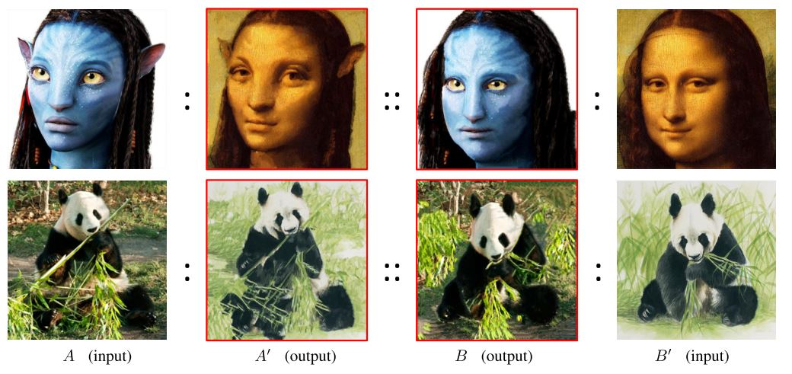

Deep Image Analogy
A Semantically Consistent Approach to Neural Style Transfer
Image style transfer refers to the problem of transforming an image in such a way that it acquires the stylistic attributes of a reference image, while preserving its content information. For instance, color editing with respect to a reference image can be achieved by matching the target and the reference color histograms
The fact that humans can appreciate and differentiate style without quite agreeing on how to describe it (even less on how to formalize it) makes machine learning a promising approach for that problem.
Gatys et al. developped the first algorithm that uses a deep convolutional neural network (CNN) to capture and modelize the style of an image. This technique is refered to as Neural Style Transfer
Liao et al. solve that issue by introducing Deep Image Analogy
Background
In this section, we briefly present the pre-requisite notions that are at the core of the Deep Image Analogy method.
Randomized Patch-Match algorithm
Patch matching refers to the problem of finding the nearest neighbor patch in an image B to a source patch in an image A. The result of this process is a mapping function $\phi_{ab}$, also called Nearest-Neighbor Field (NNF) that is the same size of image A, and defines for each pixel of A where is the nearest patch in B. The patches are usually extended to all the channels of an image, so for a 3 channels RGB image, a 3x3 patch would in fact refer to a 3x3x3 tensor. Different similarity metrics can be used to define the nearest patch may be used, a simple one being the squared Euclidean distance : $$ d(P^{(A)}, P^{(B)}) = \sum_{i,j,k} (P^{(A)}_{i,j,k} - P^{(B)}_{i,j,k})^{2}$$
The main challenge is the number of patches to compare with each other, which grows exponentially with the size of the images. Luckily, the Randomized approach to PatchMatch 
This approach depends on the reasonable assumption that natural images are usually spatially smooth. That means that small sub-regions of the image will usually have similar colors, so successive patches in image A might want to share the same correspondances in image B (propagation step) and that randomly sampling patches to compare with that come from different sub-regions counts as an efficient scan of the image in order to find a good neighborhood (random search step). When the PatchMatch is successful, one can express image A only in terms of pixels in image B, a process shown in the next figure. This resulting hybrid image is called a warp.

Semantical features in deep CNNs
VGG-19 is a deep convolutional neural network architecture trained on the ImageNet data set for image classification/recognition tasks. It consists in 5 convolutional blocks (made of 2, 2, 4, 4 and 4 layers respectively) supplemented with a 2x2 pooling layer (max or average) each, and followed by a couple of fully connected layers. The convolutional blocks of VGG use spatial coherence in images to build higher representation of them with latent semantical information such as eyes and nose positions for faces, colours ...etc. Each block builds a higher representation on top of the previous, extracting more and more semantics, which are later used in fully connected layers for classification.

We use a pretrained instance of the VGG-19 architecture to build and extract feature maps. Since the network is not used for classification purposes, we can get rid of the fully connected layers, and only work with the convolutional blocks of VGG. We do not retreive every feature map at every layer's output, but only the ones produced by the first layer of convolutional blocks.

Algorithm
The algorithm has been designed to perform style transfer on two images, while respecting the semantic correspondances between them. Given two reference images A1 and B1, it produces two mapping functions $\phi_{ab}$ and $\phi_{ba}$ that allow to warp the references into two new images A2 and B2 that mix the style and the content of the references. An overview of the algorithm is presented on the following figure.

Broadly, the process aims to reconstruct every deep feature maps of the two latent images, starting at the fifth layer and working its way back to the first layer of VGG. Therefore, before starting this process, the two reference images are fed to the network and their deep features are saved. The feature maps of the two latent images at the deepest layer (L=5) are initialized to the same values as the reference images (more specifically, $F^{(5)}_{A2}$ is initialized with $F^{(5)}_{A1}$ and $F^{(5)}_{B2}$ is initialized with $F^{(5)}_{B1}$). Then, for each layer $L$, an NNF-search (Deep PatchMatch) is performed to discover the mapping functions $\phi^{(L)}_{ab}$ and $\phi^{(L)}_{ba}$, followed by an optimization phase (Deep Reconstruction) that aims to reconstruct the feature maps $F^{(L-1)}_{A2}$ and $F^{(L-1)}_{B2}$ of the latent images at layer $L-1$. The Deep PatchMatch and Deep Reconstruction phases are explained in more details in the next sections.
Deep PatchMatch
One key element of the method is that the PatchMatch is applied to find correspondances between the deep features of the reference and latent images. Applying this technique at such a deep level of image features allows to map semantic elements of both images to one another. The next figure shows how the eyes of the two reference images are very similarly represented at that depth.

Another key element is that the random search in deep patch match is locally constrained. The mapping function for the fifth layer is randomly initialized and has access to the whole image in the random search phase in order to find the best possible matches for each semantic attributes. However, the mapping functions for $L \in \{1,2,3,4\}$ are initilized with an upsampled version of the previous layer, and their random search only has access to a small centered at the current best match, making it impossible to completely destroy the mapping that had been established in previous layers. Therefore, the correspondances found at the deepest layers serve as the foundation upon which the next mapping functions are built, and those shallower layers mapping only are fine-tuned versions of the deeper ones. This fine-tuning effect is illustrated in the following figure.

Deep Reconstruction
The feature reconstruction phase consists in 3 steps : (1) the feature map warping using NNFs computed in previous layers, (2) the deconvolution and (3) the feature blending. Here we explain each of them.

Provided we have $\phi^{L}_{a \to b}$ the nearest neihgbour field at layer $L$
Implementation details
Our implementation of Deep Image Analogy is in Python, and uses the deep learning framework pytorch for manipulating tensors and easily use and compare optimization algorithms. The PatchMatch steps, being highly dependant on intricated loops are processed on CPU. The reconstruction phase formulated as an optimization problem is computed on GPU. We use the squared Euclidean distance for similarity metric between deep patches.
Results and discussion
Blablabla
Comparisons
Limitations
Conclusion
Blablabla
Examples of formatting
In a regular RNN, at italic text, the cell state $h_t$ is computed based on its own input and the cell state $h_t$ that encapsulates some information from the precedent inputs : $$h_t = f(W^{hx}x_t + W^{hh}h_{t-1})$$
The following figure presents a Seq2Seq model with a two layers encoder and a two layers decoder: 
However, to better overcome the information bottleneck and long-term dependencies limitations, attentions model have been introduced. The basic idea of attention is that instead of attempting to learn a single vector representation for each sentence, we keep around vectors for every word in the input sentence, and reference these vectors at each decoding step.
-
Blablabla
-
Blablabla $b_{t} = (b_{t0}, ... ,b_{tT})^T$ is then passed throught a softmax function. $$\alpha_{tj} = softmax(b_{tj}) = \frac{exp(b_{tj})}{\sum_{k=1}^{T} exp(b_{tk})}$$
-
Blablabla
Remember that for :
The main idea of the proposed approach is to approximate the second term of the gradient (i.e
Bold stuff: Blablablabla blablabla blabla blablabla blabla blablabla blabla blablabla blabla blablabla blabla blablabla blabla blablabla blabla blablabla blabla blablabla blabla blablabla blabla blablabla blabla blablabla blabla blablabla blabla blablabla blabla blablabla blabla blablabla blabla blablabla blabla.
Acknowledgments
Thank you to Pr. Christopher Pal for allowing us to use GPUs from his server to perform our experiments.